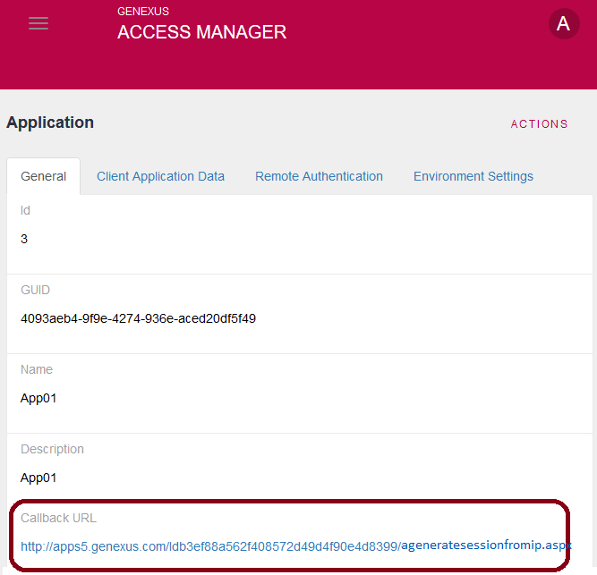
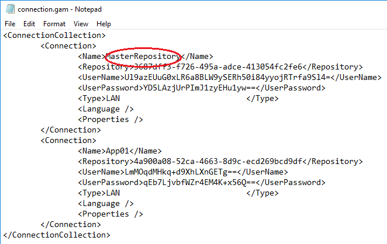
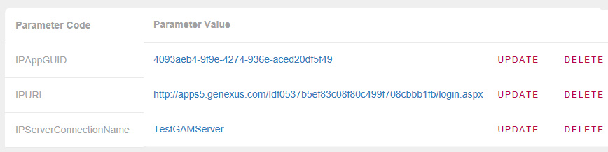
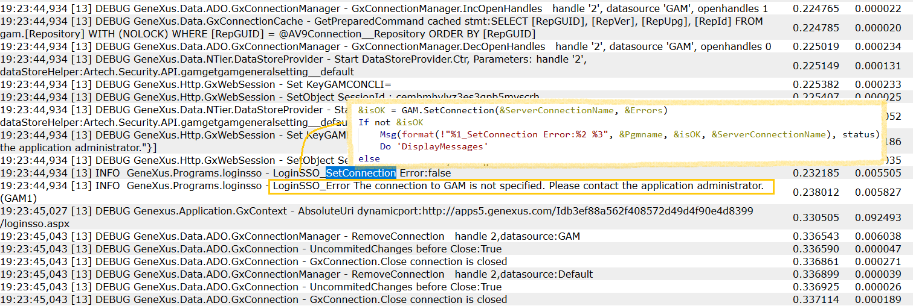
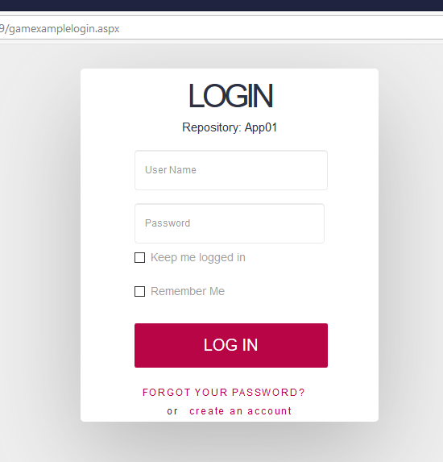
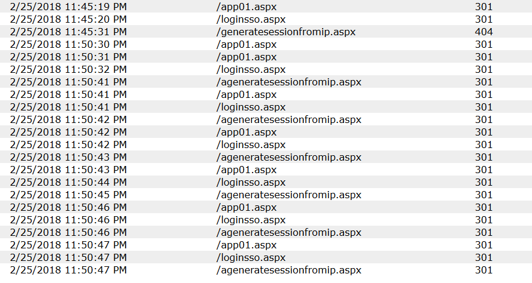
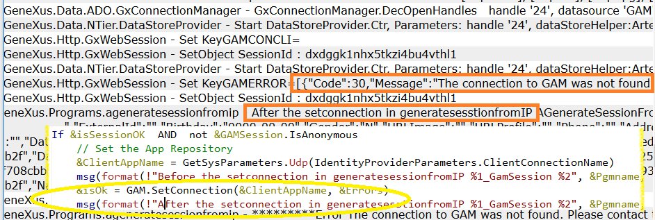

HowTo: Emulating SSO without using GAM remote authentication
Single Sign On (SSO) is implemented in GAM using GAM Remote Authentication Type (where an Identity provider is defined). In some cases, it's necessary to emulate an SSO using GAM without GAM remote authentication type. In the scenario presented in this document, there are many applications (which can also be used by different branches of the same company), installed on different web apps. Since it’s the same company, users may be centralized and defined only once, in one place. Also, it’s expected that users can log in only once for all the applications, without having to log in for each of them if they run in the same browser. For this requirement, an SSO is needed. Another premise is that the same user might have different GAM Roles in each application. Remember that the relation Users-Roles in GAM is included in a GAM Repository. Anytime you need to model different roles for the user (it can be by branch, or by application), one solution is to have a different repository (by branch, or by application). So, in the solution introduced in this document, we’re going to have multiple repositories to group different roles for the same user depending on the application. Summing up, the scenario consists of the following:
Note that this scenario can be accomplished using Single Sign On in applications using GAM. But, looking for an alternative where GAM remote authentication type is not used, we will continue with this solution. This document is organized as follows: RationaleThe solution now consists of the following:
3. The login is executed in one place, in the web app running the application connected to the master repository. 4. Users must be enabled in all the repositories (the users' namespace should be the same as that of the repositories). Note: In a real Identity Provider using GAM remote, the Oauth 2.0 protocol is used. In this case, we are not strictly following Oauth 2.0.
Besides, a state is passed in the dialog to make sure that the response comes from where the client made the request. So, how does the solution work?
Implementation of the solutionConfigurationThis solution's configuration can be summarized as follows:
2. Configure each application KB using the associated Repository GUID; that is to say, the Repository ID Environment property, Administrator User Name property, Administrator User Password property. Also, configure the Connection User Name property and the Connection User Password property. This information was provided when you created the repositories. 3. Considering that you have one KB for each application, configure all of them to point to the same GAM database. 4. Configure the connection.gam file for all the client applications, containing the following GAM Repository Connections:
5. In the master repository, configure a GAM Application for each application. Use a Client Id, and Client Secret generated randomly. 6. You also have to configure the CallbackURL in each application; the callbackURL is the URL to redirect to after login. Because there is no field defined for that purpose, we use the GAM OAV to extend the Application's definition and to add an extra field. In this case, there will be an HTTP procedure that deals with the request from the side of the client application, called GenerateSessionFromIp.  7. In the master repository, you have to create all the applications of the KBs. Otherwise, since you're going to connect to the master repository from these applications, you'll get this error: Application GUID unidentified. Please contact the application administrator. (GAM174). CodingLet's see the code on both sides (master repository application and client applications). Client KBThere is an object (called "SSOLogin" in this example) whose only purpose is to get the Application credentials and redirect to the master's login. So, the SSOLogin object start event is as follows:
Event Start
/* First step: Get some system parameters */
/*Get the connection name of the master repository*/
&ServerConnectionName = GetSysParameters.Udp(IdentityProviderParameters.ServerConnectionName)
/* Get the master webapp URL */
&ServerURL = GetSysParameters.Udp(IdentityProviderParameters.ServerURL)
/* Get the last object who tried to execute and failed because of the session not being valid*/
&RedirIP_SDT.AccessURL = GAMRepository.GetLastErrorsURL()
/* Generate a random GUID for the session state */
&GUID = GUID.NewGuid()
&RedirIP_SDT.State = &GUID.ToString().Trim()
&WebSession.Set(IdentityProviderParameters.SessionData, &RedirIP_SDT.ToJson())
/* Establish a GAM Connection to the master repository */
&isOK = GAM.SetConnection(&ServerConnectionName, &Errors)
If not &isOK
Do 'DisplayMessages'
else
do "GetApplicationParameters"
// Redirect to the IP
if not &ClientID.IsEmpty() and not &ClientSecret.IsEmpty() and not &CallbackURL.IsEmpty()
&URL = format(!"%1?%2,%3,%4,%5",
&ServerURL.Trim(),
&RedirIP_SDT.State.Trim(),
&ClientID.Trim(),
&ClientSecret.Trim(),
&CallbackURL.Trim())
Link(&URL)
endif
EndIf
EndEvent
Sub "GetApplicationParameters"
/* Get the Application GUID from the system parameters */
&AppGUID = GetSysParameters.Udp(IdentityProviderParameters.AppGUID)
&GAMApplication = GAMApplication.GetByGUID(&AppGUID.Trim(), &GAMErrors)
If &GAMErrors.Count > 0
Do 'DisplayMessages'
else
&ClientID = &GAMApplication.ClientId
&ClientSecret = &GAMApplication.ClientSecret
/* Get the CallbackURL of the GAM Application configured in the master repository */
GetApplicationCallBackURL(&id,&CallbackURL,&isOK)
EndIf
EndSub
Note in the code above that the information of the GAMApplication is taken from the master repository (where the connection was set). The connection name of the master repository can be found in the connection.gam file:  The system parameters are the following (IPAppGUID - the GUID of the Application registered in the master repository, IPURL - serverURL, IPServerConnectionName):  GenerateSessionFromIP is a procedure running on the client; it’s the callback procedure. This procedure validates the incoming request, generates a connection to the master repository and, if the GAMSession is valid there, it generates another GAMSession in the local repository. Then, it redirects to the object that had thrown the authentication exception. &isOk = GAM.SetConnection(&ServerConnectionName, &Errors) &isSessionOK = GAMRepository.ValidAccessToken(&token, &GAMSession, &GAMErrors) If &isSessionOK AND not &GAMSession.IsAnonymous /*Get the local connection name from the system parameters */ &ClientAppName = GetSysParameters.Udp(IdentityProviderParameters.ClientConnectionName) /*Set the local connection*/ &isOk = GAM.SetConnection(&ClientAppName, &Errors) // Redirect to the correct object where:
Master RepositoryIn this KB, it is the login object. Basically, in the start event, this object sets a connection to the master repository, validates the request parameters and loads the callbackURL.
Event Start
&isOK = GAM.SetConnection(!"MasterRepository", &Errors)
If not &State.IsEmpty() AND not &ClientID.IsEmpty() AND not &ClientSecret.IsEmpty() AND not &CallbackURL.IsEmpty()
// Basic parameters validation
GetApplicationbyClientId(&ClientID,&ClientSecret,&GAMGUID,&GAMAppCallbackURL)
&GAMApplication = GAMApplication.GetByGUID(&GAMGUID, &GAMErrors)
If &GAMApplication.ClientId = &ClientID AND &GAMApplication.ClientSecret = &ClientSecret and &CallbackURL = &GAMAppCallbackURL
&AppOK = True
// Save data
&ClientData_SDT.CallbackURL = &CallbackURL
&ClientData_SDT.State = &State
&WebSession.Set(!"ClientData", &ClientData_SDT.ToJson())
Else
&AppOK = False
Endif
EndEvent
In the refresh event, if the GAMSession is valid, it redirects to the object.
Event Refresh
&Errors = GAMRepository.GetLastErrors()
If &Errors.Count > 0
// Show an error
else
If &AppOK
&SessionValid = GAMSession.IsValid(&GAMSession, &Errors)
If &SessionValid AND not &GAMSession.IsAnonymous
&WebSession.Set(!"ClientData", &ClientData_SDT.ToJson())
//Redirect to the client
&link = format(!"%1?%2,%3", &ClientData_SDT.CallbackURL, &ClientData_SDT.State, &GAMSession.Token)
Link(&link)
else
//
EndIf
else
//
EndIf
EndIf
EndEvent
Of course, there is also a login event:
Event Enter
&LoginOK = GAMRepository.Login(&UserName, &UserPassword, &AdditionalParameter, &Errors )
If &LoginOK
msg(format(!"Login succedded. %1", now()))
refresh
else
msg(format(!"Login result: %1", &LoginOK))
Do 'DisplayMessages'
EndIf
EndEvent
Download MasterKb from here and client KB from here. AvailabilitySince GeneXus 15 Upgrade 9. ConsiderationsWhen using the GAM Deploy Tool utility to migrate data between repositories, make sure to export and import the administrators roles as this information is important when changing repositories. Troubleshooting the solution
Possible errors1. GAM connection is not specifiedThe complete error is: The connection to GAM is not specified. Please contact the application administrator. (GAM1) If you look at the trace, you can find the debug messages added in your code, and the trace debugging messages of GAM:  If you're getting this error, check that the connection you're trying to establish was correctly defined in the repository, and there's an entry in the connection.gam file for it. 2. Application GUID unidentifiedThis error occurs because the application specified in the application.gam file does not exist in the repository you're connecting to. The error detail is as follows: Application GUID RepId:2 - AppGUID:789c15aa-b18b-4a3e-9e21-7a8e5cd2aba5 unidentified. Please contact the application administrator. (GAM174) If you're getting this error while connected to the master repository, check that all the applications are defined in the repository. If you want to execute the gamexamplelogin as usual (to connect to the local repository without going through the master repository), check that the gamexamplelogin performs a setconnection over the first connection in the connection.gam file. If this connection is the master's, the local application may not exist there. The gamexamplelogin object shows the repository you're trying to connect to.  3. GAM Error Not foundThe error detail is: GAM Error Not found. (GAM200) This error can be thrown if you're executing the following line with an invalid Application GUID: &GAMApplication = GAMApplication.GetByGUID(&AppGUID, &GAMErrors) 4. Application loops or details too many redirectsIf the application loops (you can see in the trace that the login is successfully done on the master repository but not on the client's):  Check if you haven't misconfigured the connection.gam on the client. You may look at the trace and find the following:  5. Application GUID RepId - AppGUID unidentifiedWhen changing a repository the following error appears: Application GUID RepId:X - AppGUID:Y unidentified. Please contact the application administrator. (GAM174) Make sure the main repository and the associated client repository have an appGUID with the same value as this is a requirement. One option is to duplicate the application and assign the correct AppGUID to the client one. 6. User not foundWhen login in the following error appears: User not found. (GAM7) Make sure the user is created on the local repository and core; you need to enable the user in both repositories too. |